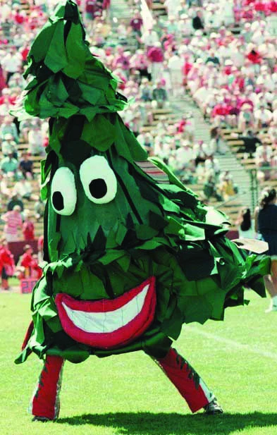

Well... hello everyone! You may or may not already know about me depending on whether if you've read my about-me page, but if you haven't then I'll give a quick introduction about myself. My name is Nathan Tran: a 17 year old Vietnamese Boy who is about to go into his last year at high school. Some hobbies of mine would be playing music, video games, reading, and hanging out with my friends.
Currently, I'm in the midst of college applications and it's a weird mixture of fun and dread. On one hand, these essays are pretty much gonna determine my next 4 (or maybe more) years in college. On the other, for some reason it's been a lotta fun writing these essays because they're on topics that I care about. Oh, by the way, I'm probably gonna try to post an update at the end of every week (i.e Sat or Sun). Well that's enough about me for now. I got a couple things I want to talk about for this post.
Quick College Apps Update
I don't wanna go too into depth about this, but let's just say, I'm shooting pretty high. I don't feel worthy of attending half of the colleges that I'm applying too because I feel like I'm not good enough for them. Maybe it's a confidence issue, maybe it's true. Who knows. Regardless, I'm still gonna try my best on all of these essays. I'm just about done with the supplementals for a specific college with a tree since I'm applying early. I still got quite a bit to go. If you're wondering "why's he starting so early?" it's because I got a bunch of stuff during the fall that I needa do so I don't want to stress out about applications as the due date nears. My goal for the summer is to draft half of the supplementals for my schools as well as have drafts of my common app and UC essays. I want to spend most of the fall reviewing. I'll update you guys more as I make progress on this :D
Goodbye Parties
Today was quite the day. Two of my friends organized a goodbye party for one of my friends who was going to be moving to New York in a few weeks. I honestly couldn't believe the news when he told me that he was moving. I didn't know him before highschool, but he's become a great friend and someone that was fun to talk to. In addition, he was extremely intelligent. Who's supposed to help me with physics now :(
The beginning of the party was kind of scuffed since everyone arrived at different times, with a certain someone arriving about two hours late. Since the star of the party arrived before everyone else was there, we tried to play it off as one of our other friend's birthday, as that's what he was told. I'm pretty sure he caught on pretty quick, and when the big reveal came, he wasn't that surprised. Regardless, he was still really greatful for it. I think the highlight of the party was when we had a firing squad of water-balloons that surrounded him. Homie got hella soaked.
An Attempt to do Something
After my summer camp, I was inspired by a fellow camper to create my own website. His was really cool. Mine's isn't right now. But you know what, that's what learning is for. It was clear that he had way more experience in web-development that I did, so I just need to keep practicing and learning until I get the hang of it. Not gonna lie, my knowledge of web-dev is pretty limited right now, so I can't do anything fancy as of right now. As much as I would like to say I made this website from scrath, I did use some bootstrap templates to help me out. However, I eventually want to reach a level of understanding to where I can do it myself.
This is probably it for my first blog, and I'm gonna go try to figure out how to purchase a domain to publish this. I apologize that there's nothing on the website, but I'll do my best to keep this a project evolving as much as possible throughout my last year of highschool. If you made it to the end, thanks for reading <3